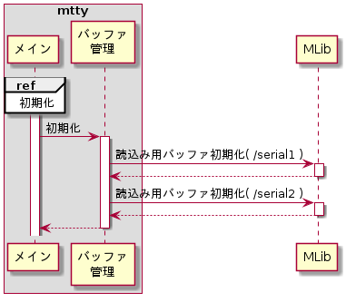
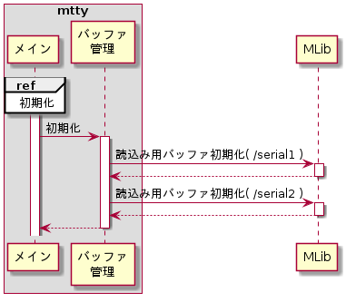
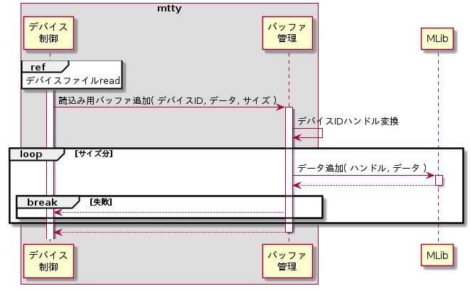
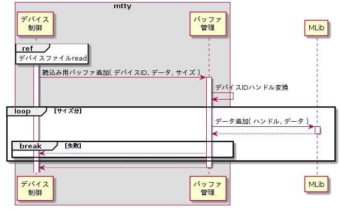
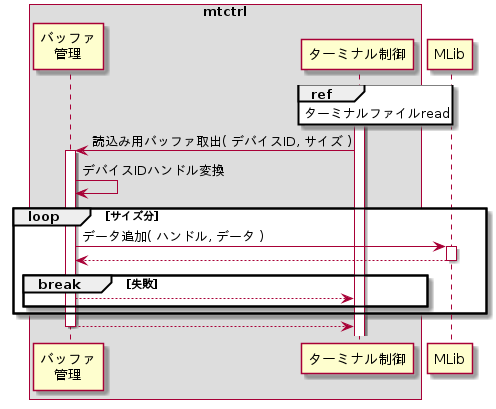
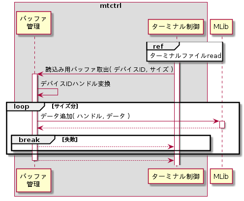

初期化
mtty起動時に各バッファを初期化する。バッファの一覧とシーケンスを以下に示す。
管理バッファ一覧
| # | デバイスファイル | 用途 | 説明 |
| 1 | /serial1 | 読込み用 | シリアルポート1から読み取ったデータをバッファリングする。 |
| 2 | /serial2 | 読込み用 | シリアルポート2から読み取ったデータをバッファリングする。 |
シーケンス


バッファ初期化
バッファの初期化は、各バッファ毎にMLibライブラリのMLibRingBufferInit()を用いて行う。設定パラメータを以下に示す。
MLibRingBufferInit()設定パラメータ
| # | 引数名 | 設定値 | |
| 読込み用 | |||
| /serial1 | /serial2 | ||
| 1 | *pHandle | (各バッファ毎のバッファハンドラポインタ) | |
| 2 | entrySize | 1 | |
| 3 | entryNum | 4096 | |
| 4 | *pErr | (エラー要因格納先ポインタ) | |
読込み用バッファ追加
読込み用バッファにデータを追加する。シーケンスを以下に示す。
シーケンス


ハンドル変換
デバイスIDからバッファハンドルへの変換は下記対応表に従う。
デバイスとバッファハンドルの対応
| デバイスID | ハンドル |
| MTTY_DEVID_SERIAL1 | シリアルポート1読込み用バッファハンドル |
| MTTY_DEVID_SERIAL2 | シリアルポート2読込み用バッファハンドル |
データ追加
バッファへのデータ追加は、1byte毎にMLibライブラリのMLibRingBufferPush()を用いて、サイズ分繰り返し行う。設定パラメータを以下に示す。
MLibRingBufferPush()設定パラメータ
| # | 引数名 | 設定値 |
| 1 | *pHandle | (バッファハンドルポインタ) |
| 2 | *pData | (追加データポインタ) |
| 3 | *pErr | (エラー要因格納先ポインタ) |
読込み用バッファ取出
読込み用バッファからデータを取り出す。シーケンスを以下に示す。
シーケンス


バッファ変換
デバイスIDとバッファハンドルの変換は、読込み用バッファ追加機能と同じ変換を行う。
データ取出
バッファからのデータ取出しは、1byte毎にMLibライブラリのMLibRingBufferPop()を用いて、サイズ分繰り返し行う。設定パラメータを以下に示す。
MLibRingBufferPop()設定パラメータ
| # | 引数名 | 設定値 |
| 1 | *pHandle | (バッファハンドルポインタ) |
| 2 | *pData | (データ格納先ポインタ) |
| 3 | *pErr | (エラー要因格納先ポインタ) |